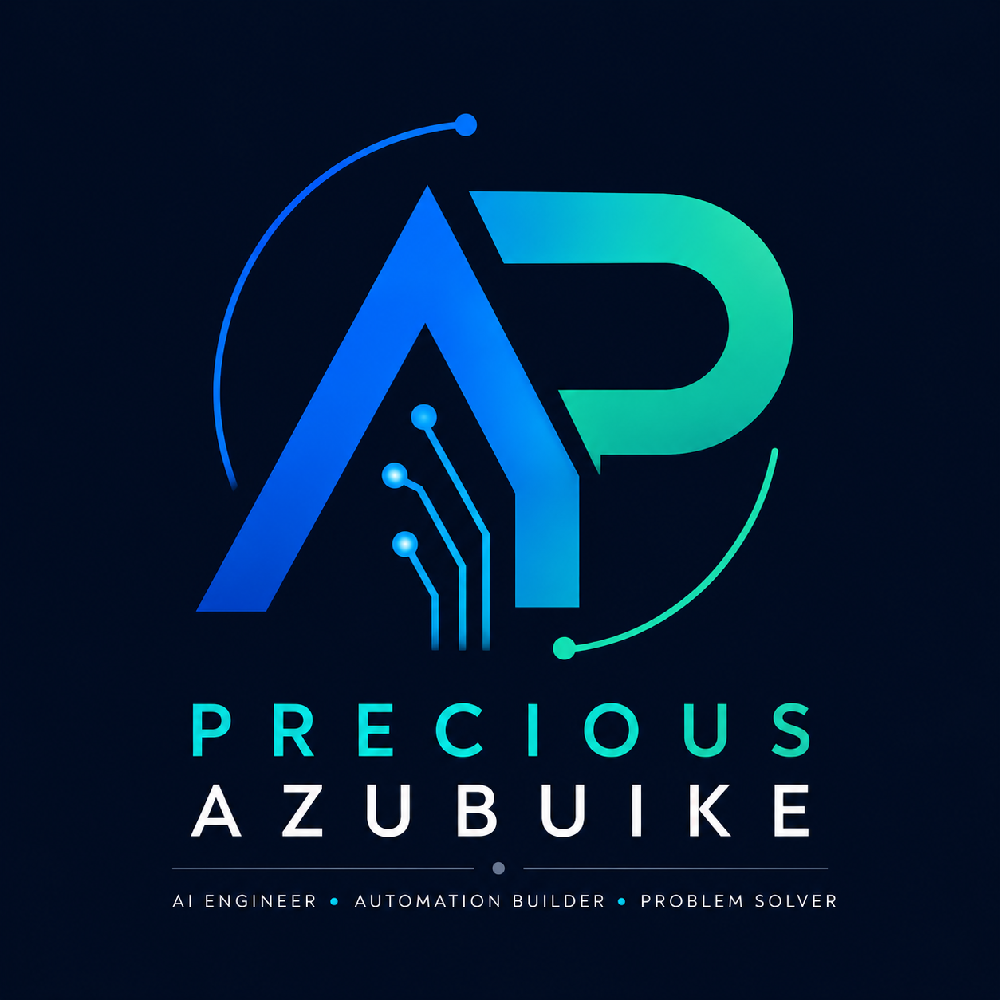

Artificial Intelligence
- Machine Learning
- Deep Learning
- Computer Vision
- Natural Language Processing
- Generative AI
- Agentic AI Systems
- Prompt Engineering
- LLM Integration

AI Engineer | Generative AI Developer | Automation Solutions Builder
MSc Artificial Intelligence & Robotics graduate with hands-on experience building AI-powered applications, computer vision systems, automation workflows, conversational AI solutions, and intelligent agents using Python, Machine Learning, LLMs, APIs, and modern AI frameworks.
About Me
I am an Artificial Intelligence and Computer Science professional with a Master's degree in Artificial Intelligence & Robotics from the University of Hertfordshire and a Bachelor's degree in Computer Science from the University of Port Harcourt.
My experience spans AI application development, machine learning, computer vision, conversational AI, workflow automation, and intelligent systems. I enjoy transforming complex business challenges into practical AI solutions that improve efficiency, decision-making, and user experiences.
Skills
Featured Projects
Agentic AI
Repository LinkDeveloped a modular AI-powered trading assistant capable of analyzing precious metals market data, generating trading insights, evaluating risks, and producing actionable recommendations.
Audio AI
Developing an intelligent audio generation system that creates personalized sleep and relaxation soundscapes through adaptive learning and user preference modeling.
Automation
Built an AI-powered conversational assistant capable of interacting with users and automating email workflows based on user requests.
Computer Vision
Developed a computer vision system that detects whether motorcyclists are wearing helmets using machine learning and image classification techniques.
Deep Learning
Created a real-time computer vision solution for detecting fire and smoke in video feeds to support early hazard identification.
Experience
Hands-on project experience across AI application development, machine learning, computer vision, conversational AI, workflow automation, intelligent agents, and API-driven solutions.
Education
University of Hertfordshire
University of Port Harcourt
Certifications & Professional Memberships
Professional membership supporting continued growth in computing, AI, and technology practice.
Blog
Contact
Let's connect.